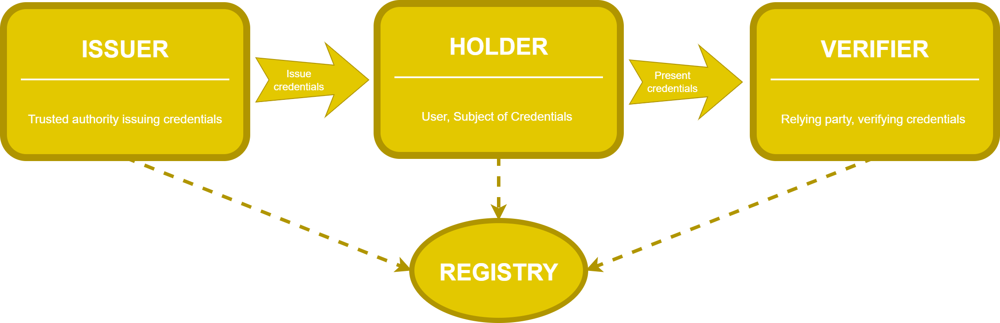
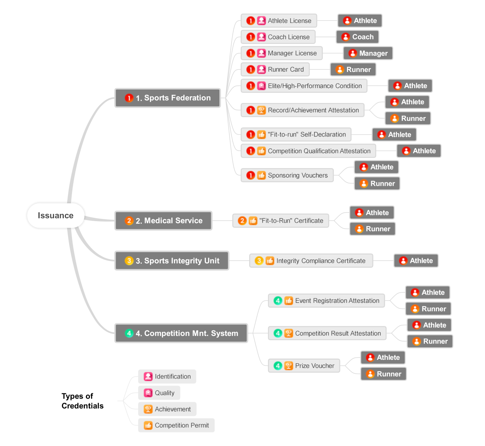
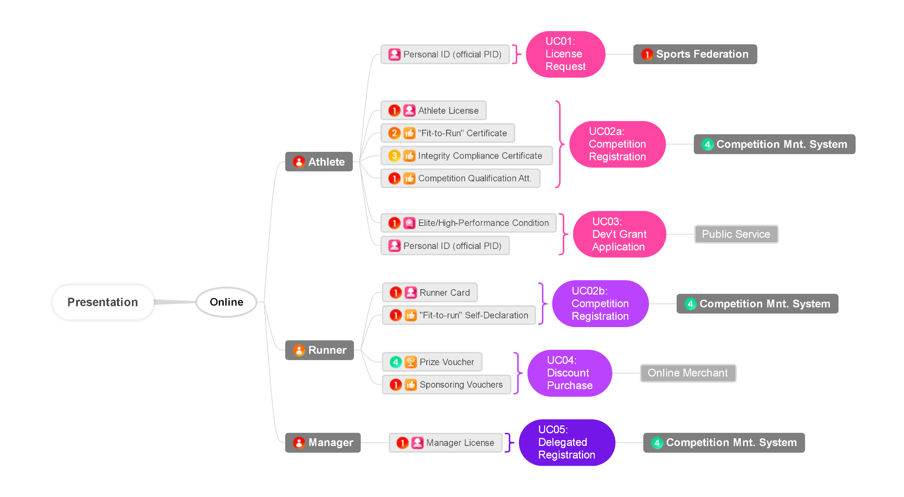
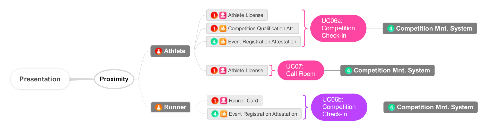

Regulated sports usually depend on authorized entities that manage identities and credentials autonomously but follow common patterns and rules. This document collects scenarios and use cases in the athletics ecosystem where the application of the paradigm of distributed digital credentials can be naturally applied.
This document is in early definition. We appreciate contributions from other sports.
The decentralized model for digital identity and verifiable credentials enables trust while bringing full management flexibility and data sovereignty. In this model, the user holds their own verified credentials issued by trusted authorities and can be verified by relying parties.
The rise of the digital wallets and, in concrete, the EUDI wallet ecosystem, brings new opportunities for the management of personal credentials and authentication in scenarios like this. Storing a digital athlete's license and the permits to participate in the competition (i.e., qualification attestations and integrity permits) and the presentation to trusted officials would facilitate the process while increasing efficiency (i.e., real-time checking of attestations) and privacy (with selective disclosure or zero-knowledge proof).
During the conversations at AthTech'26, we discussed the feasibility of digitally transforming athletics and contributing to the digital credential ecosystem with new complementary scenarios and stakeholders. This document is a first attempt to gather use cases with the needs and challenges in the management of credentials in athletics and sports in general.
This specification uses terms and a glossary already defined by other standardization activities, especially related to the [=verifiable credentials=] ecosystem [[VC-OVERVIEW]].

In regulated sports, a [=credential=] might consist of information related to:
Common credentials that we can find in regulated sports are:

This section collects typical scenarios and use cases where digital credentials may be applied to regulated sports. These cases are related to presentation of credentials in remote (online) and in proximity.


A Call Room in athletics is a strict, mandatory process where officials verify an athlete's identity, dressing, and equipment compliance before a competition. Physically, the Call Room is a restricted area usually located between the warm-up area and the entry to the track, field, or start line of the competition. Athletes must identify themselves to the officials considering a tight schedule that varies depending on the discipline and type of event -it happens a few minutes before the competition.
In the Call Room process, judges check the identity of the athlete, the competition bibs (i.e., identifiers and placement), shoe and uniform compliance, and other aspects like advertising. It is a critical moment for the athletes because missing or failing the Call Room without a valid reason leads to exclusion from participating in the competition.
Time for fixing errors is too short. For instance, in outdoor events like road racing or cross-country, the Call Room closes ten minutes before the competition starts. Thus the strict process and short time before the start is a critical moment for the competitors. Currently, athletes are required to identify themselves to the officials through an official document (i.e., the [=athlete's license=], passport, or ID card). Right after the Call Room, an authorized team manager must collect the identification documents and give them back after the race, with the subsequent risk of losing or misplacing the documents.
Since the [=officials=] must confirm the participation of the athletes in the [=system=], this scenario is ideal for the presentation of digital credentials in proximity. For identification with minimum disclosure of information, judges with a smartphone or tablet may request the [=athlete's license=] validity, name, and picture. In some competitions, they could request additional attributes related to qualification and permits. Athletes may use their personal smartphones with a digital wallet to present the claims requested by the officials operating a [=competition management system=]. However, in the official competitions, subject to World Athletics Rules, smartphones are strictly not allowed in the Call Room procedure, so the best option is to store and present the credentials through the athlete's smartwatch. It is a device allowed in competitions and the only external digital accessory that athletes carry during a competition.